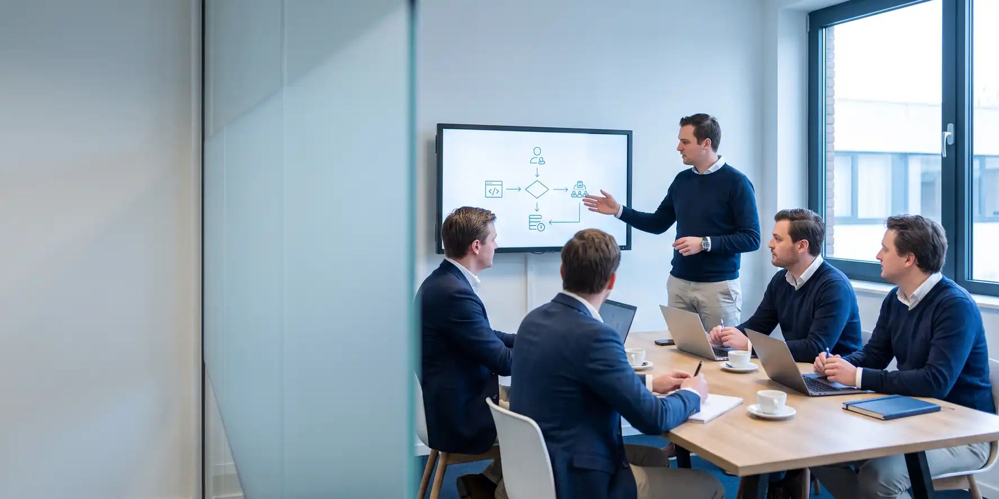
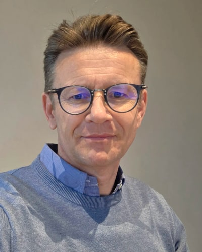

Orion in de praktijk
Voor de kwaliteitsdienst. Vragenlijsten invullen met Orion, antwoorden en bronnen nakijken, en de kennisbank bijhouden.
Vraag deze training aanTraining voor kmo’s
Op hun eigen taken, bij u ter plaatse of online. Zo blijft de tijdwinst ook na de pilot.

Een nieuwe tool of een geautomatiseerde workflow levert pas iets op als uw mensen ermee kunnen werken. Wie niet goed weet hoe het werkt, valt terug op de oude manier. Daarom trainen we met uw eigen documenten en taken, niet met voorbeelden uit een handboek.
Elke training is kort en praktisch, met één doel: uw team doet het nieuwe werk daarna zelf, zonder ons.
Elk programma kan apart, of als vervolg op een pilot. We stemmen de inhoud af op uw team en uw taken.
Uw mensen oefenen op uw vragenlijsten, uw workflows en uw beslissingen. Wat ze leren, gebruiken ze de dag nadien.
AI bereidt voor, uw mensen kijken na en beslissen. In elke training oefenen we precies die rolverdeling.
Voor de kwaliteitsdienst. Vragenlijsten invullen met Orion, antwoorden en bronnen nakijken, en de kennisbank bijhouden.
Vraag deze training aanVoor teamleiders en medewerkers. Handwerk herkennen in de eigen afdeling, een workflow beschrijven en samen bepalen wat geautomatiseerd wordt.
Vraag deze training aanVoor zaakvoerders en directie. Hoe beslissingen, processen en systemen samen meebewegen als de markt verandert.
Vraag deze training aanvan de kmo’s die generatieve AI gebruiken, heeft evenveel personeel nodig als voordien. 6% heeft meer mensen nodig, 9% minder.
Bron: OECD, 2025
kmo’s die nog geen generatieve AI gebruiken, noemt een tekort aan vaardigheden als belangrijkste reden.
Bron: OECD, AI and skills
Leren, toepassen, volhouden. Daarom stopt een training niet na de laatste sessie.
We bespreken uw team, uw taken en wat u wilt bereiken.
Ter plaatse of online, met uw eigen documenten en voorbeelden.
Na enkele weken kijken we samen wat er in de praktijk gebruikt wordt en wat nog beter kan.

Oprichter van Grow Faster
Meer dan twintig jaar procesverbetering bij grote bedrijven zoals Volvo, Colruyt en Telenet. Nu breng ik die aanpak naar kmo’s, in het Nederlands en het Frans.
Ter plaatse of online, in het Nederlands of het Frans. Prijs op aanvraag.
Vertel ons met welke taken uw team vandaag het meeste tijd verliest. We stellen een training voor die daarbij past.
This website uses as few cookies and similar techniques as possible. Necessary storage remembers your cookie choice and language, and cannot be refused. Only with your consent are typefaces loaded from Google Fonts, which then receives your IP address. Also only with your consent, we count visits anonymously with GoatCounter, without cookies. If you refuse, the website works fully and uses the fonts on your device. You can change or withdraw your choice at any time via Cookie settings at the bottom of every page. Responsible: Erlend Hollebosch.
Remember your cookie choice and language, and deliver the website securely.
Stored in your browser: your consent choice and your language. Nothing is sent to us. Our host processes technical data, such as your IP address, to deliver the page.
Load typefaces from Google Fonts. Google receives your IP address.
Provider: Google Ireland Ltd. Purpose: displaying typefaces. If you refuse, nothing is loaded from Google and the site uses fonts already on your device.
Count visits anonymously with GoatCounter. No cookies, no stored IP addresses.
Provider: GoatCounter, servers in the EU. Purpose: aggregated visitor statistics, such as pages viewed, referring website, browser and country. Your IP address is only used briefly to count unique visits and is not stored.